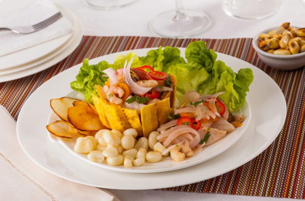
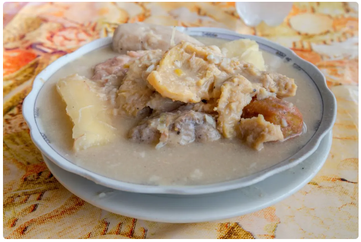

.png)

.png)
.png)
¡Descubre la emoción del canotaje y siente la adrenalina de deslizarte sobre el agua! Si buscas una aventura llena de acción, este deporte es para ti. Ya sea que prefieras una experiencia tranquila en un lago cristalino o te atrevas a enfrentar los emocionantes rápidos de un río, el canotaje te ofrece la oportunidad de conectar con la naturaleza y desafiar tus límites. Con cada palada, no solo ejercitas tu cuerpo, sino que también pones a prueba tu coordinación y equilibrio. ¿Listo para vivir la aventura? ¡El agua te espera!
CANOTAJE
Atrevete a todo
.png)
HOTELES

Centro Hotelero Panama Casco
Ubicado en el corazón del Casco Viejo, en la Ciudad de Panamá, frente a la Plaza Independencia y al lado del Museo del Canal Interoceánico, el Central Hotel Panamá es la elección preferida de los viajeros más exigentes y atractivos. Ofrecemos instalaciones de alta calidad, servicios excepcionales y una exquisita experiencia culinaria que harán de tu visita a Panamá un recuerdo inolvidable. Además, en el Hotel Central, tus compañeros peludos son bienvenidos, asegurando que tu estancia sea perfecta para ti y tu mascota

MARRIOTT PANAMA HOTEL
Situado en el centro comercial más grande de América Latina (Albrook Mall), a menos de 5 minutos de Ciudad del Sabre, el Canal de Panamá y la Embajada de EE.UU., ya 10 minutos del Distrito Financiero, el exclusivo Hotel Marriott Panamá. se encuentra a 35 minutos del Aeropuerto Internacional de Tocumen (PTY). El Marriott Panama Hotel ofrece 331 cómodas habitaciones, 3 restaurantes y salones, tecnología de punta, más de 36,000 pies cuadrados de espacio para reuniones, una piscina infinita y acceso directo a más de 600 tiendas y boutiques de Albrook Mall. Nuestro hotel no solo es ideal para los viajeros, sino también para sus mascotas, ofreciendo un ambiente cómodo y acogedor donde tanto tú como tus compañeros peludos podrán disfrutar de una estancia rel.

ISABELA SUITES
Descubra por qué tantos viajeros consideran La Isabela Suites el hotel ideal al visitar Ciudad de Panamá. Ofrece la combinación perfecta de calidad, comodidad y ubicación, con un ambiente familiar y servicios diseñados para hacer tu estancia lo más placentera posible. Además, durante tu estancia disfrutarás de acceso a un conserje, una terraza-solario y desayuno. También ofrecemos aparcamiento privado de pago Si viajas con mascotas, La Isabela Suites es una excelente opción, con instalaciones cómodas tanto para ti como para tus compañeros peludos. Estamos deseando darte la bienvenida en tu próxima visita a Ciudad de Panamá.
GASTRONOMIA
CEVICHE
Seguramente hayas escuchado hablar del ceviche, identificado principalmente por ser el plato nacional del Perú, pero también consumido en varios países del continente. La base de este ceviche suele ser pescado blanco, como la corvina, marinada en jugo de limón, lo cual cocina el pescado de manera natural. A esto se le añade cebolla, pimientos, cilantro fresco, y ocasionalmente ajo, ají y apio. Algunas versiones también incorporan tomate y pepino para un toque extra de frescura. A diferencia del ceviche peruano, el panameño tiende a ser más simple en términos de ingredientes. El ceviche peruano frecuentemente incluye una mayor variedad de mariscos, además de la leche de tigre (caldo picante hecho con jugo de limón, ají, y el propio jugo del pescado) que no suele estar en la versión panameña
ARROZ CON GUANDÚ
Si hay un plato que no puede faltar en una mesa navideña u otra ocasión festiva en Panamá, es el arroz con guandú. Su preparación es simple: se elabora con arroz, guandú (legumbre también conocida como gandul o chícharo de paloma), y una mezcla de condimentos que incluyen cebolla, ajo, pimientos, y a veces culantro, cocidos en un fondo de coco, lo que le otorga un sabor característico y exótico. Pero es su versatilidad lo que hace que esté tan presente; puede acompañarse con una variedad de carnes y se adapta a diferentes estilos de cocina regional dentro de Panamá. En la foto de abajo vemos al arroz con guandú junto a una "ensalada de fiesta", típico en Navidad Su origen se encuentra en la mezcla de influencias africanas y caribeñas que caracterizan la gastronomía de Panamá. El uso de leche de coco es una herencia africana, que añade una rica cremosidad al arroz
RONDON
Hablando de influencias caribeñas, ahora nos deleitaremos con el rondón. Su origen se encuentra en el legado dejado por los trabajadores jamaiquinos y antillanos que llegaron a Panamá durante la construcción del Canal y en busca de mejores oportunidades laborales. De hecho, su nombre es una castellanización del inglés "run down", haciendo referencia a la técnica de cocinar a fuego lento hasta que los ingredientes se descomponen y fusionan en una sabrosa mezcla. El rondón es un guiso robusto que destaca por su rica mezcla de sabores y su preparación con productos frescos del mar y de la tierra. Sus ingredientes principales incluyen pescado fresco, a menudo acompañado de mariscos como camarones, cangrejo o langosta, cocidos en una base de leche de coco. A esto se le añaden tubérculos como yuca, ñame, y plátano verde, así como especias y condimentos locales como el achiote, ajo, cebolla, y culantro. Este plato es muy popular en la provincia de Bocas del Toro, así como en otros países con costa al Mar Caribe que hayan tenido influencia jamaiquina.
JERRY DE RES
Nuestros Jerkies son tan simples y tan naturales que hasta tu perro podría leer la lista de ingredientes en menos de un minuto. Adelante, cronométralo. 100% proteína, finamente cortada, deshidratada por más de ocho horas, empacada a mano y cerrada al vacío. Sin químicos, sin preservantes. Ideal para el entrenamiento de tu peludo, aporta grandes beneficios y son Imprescindibles para mantener la salud, vitalidad y mantener el ritmo de vida.

VIVE PANAMA
Contactanos
COMPARTE CON NOSOTROS TUS DATOS DE CONTACTO Y TE ENVIAREMOS TODA LA INFORMACION